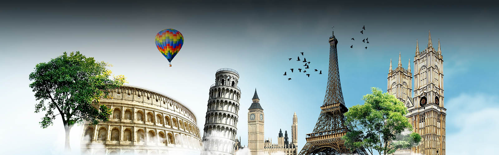

Melhores pontos turísticos da Europa
Aqui mostraremos as principais atrações turíticas para você que sonha em realizar esta grande viagem
- Torre Eiffel
É claro que a Torre Eiffel de Paris não poderia estar fora dessa lista. Construída em 1889, ela conta com 325 metros de altura e 1.665 degraus, e você não pode deixar de visitá-la quando estiver em Paris. Vista de diversas partes da capital francesa, a Torre Eiffel é um marco de como um monumento pode tornar-se um símbolo de uma nação.
Não importa a época em que você está planejando ir a Paris e a França, conhecer a Torre Eiffel é quase uma obrigação, para estar no seu álbum de lembranças de sua viagem à Europa. Além de uma vista maravilhosa de Paris, há diversos restaurantes em torno da Torre Eiffel para curtir o clima da cidade. A Torre Eiffel em Paris está aberta todos os dias, inclusive nos feriados da França.
- Coliseu de Roma
O principal ponto turístico da Itália é sem dúvida o Coliseu de Roma. É um dos monumentos mais famosos do mundo e atrai nada menos do que 4 milhões de turistas todos os anos. Sua construção se iniciou no ano de 72 d.C. e durante décadas, serviu de palco para gladiadores que lutavam entre si ou com animais para um público de mais de 70 mil romanos.
A visita às ruínas do Coliseu é um passeio obrigatório a todos os turistas que visitam Roma e a Itália, não somente por sua grandeza, mas por sua história. Como a maioria dos brasileiros que viajam para a Itália, passam por Roma, acabam conhecendo o grande Coliseu.
- Sagrada Família em Barcelona
Os principais pontos turísticos de Barcelona e da Espanha foram construídos pelo famoso arquiteto Antoni Gaudì. A principal obra e o ponto turístico mais famoso que ele construiu é a Sagrada Família de Barcelona, uma igreja com uma grandeza incomparável e que ainda não está acabada, pela enorme quantidade de detalhes e pelo tamanho que foi projetada.
Mesmo não acabada, é possível visitar o interior. O passeio pela Igreja Sagrada Família de Barcelona é sem dúvidas o principal passeio de quem vai para a Espanha. Um ponto turístico lindo que vale a pena conhecer.
- Torre Big Ben de Londres
Outro ponto turístico famoso e um dos símbolos da Europa é o Big Ben de Londres. É no Big Ben que está instalado o parlamento inglês e é parada obrigatória para qualquer turista que visita a cidade de Londres e a Inglaterra, independente da época.
O bacana é que é possível fazer uma visita às seções do Parlamento gratuitamente, mas você tem de ir diretamente ao Big Ben e ver se haverá plenária no dia. Se quiser e estiver em Londres no verão, a dica é fazer um passeio guiado pelo interior do Big Ben para conhecer sua história e a importância dele para a Inglaterra. É considerado o principal ponto turístico de Londres.
- Torre de Belém em Lisboa
A Torre de Belém fica em Lisboa e é considerada o principal ponto turístico de Portugal e um dos mais visitados da Europa. A Torre de Belém em Lisboa foi construída na era de ouro de Portugal, época das navegações, com o objetivo de proteger a cidade de invasores.
O local, ao longo dos anos, acabou sendo serventia para diversas funções governamentais como prisão, aduaneira, telégrafo e até mesmo farol. Em 1983, recebeu o título de Patrimônio da Humanidade pela UNESCO e hoje, é um dos pontos turísticos mais visitados de Lisboa e de Portugal.
- Portão de Brandemburgo em Berlim
O principal ponto turístico de Berlim e da Alemanha é sem dúvida o Portão de Brandemburgo de Berlim, que é o símbolo mais importante da cidade e mais procurado pelos turistas. É um dos monumentos mais importantes da Alemanha e mais simbólicos da história do século XX e da Europa. Além de ser uma obra prima da arquitetura alemã, ele é símbolo da separação das duas Alemanhas, que eram divididas pelo Muro de
Não tem muito o que fazer por lá, apenas tirar algumas fotos e apreciar o monumento. Como fica no centro, você pode aproveitar e já visitar outros pontos turísticos como o Potsdamer Platz, Catedral de Berlim e o Berliner Fernsehturm, que estão todos nessa região. Um pontos turístico que vale a pena conhecer em Berlim.
- Museumplein em Amsterdã
Um lugar que não pode ficar de fora da lista de pontos turísticos da Europa é o Museumplein em Amsterdã, conhecido como a Praça dos Museus. É lá que estão os museus mais famosos de Amsterdã e da Holanda, que são o Museu Rijksmuseum, o Museu Van Goghe e o Museu Stedelijk. Se for priorizar, não deixe de ir no Museu Van Goghe, que é o maior acervo de obras do artista no mundo.
O Rijksmuseum também é incrível e o Museu da História Artística da Holanda, do qual os holandeses tem o maior orgulho. Os dois são enormes e vão precisar de no mínimo três horas para pelo menos percorrer o lugar, sem fazer muitas paradas. E é na Museumplein que está o famoso escrito “I amsterdam”, bem no meio da Praça dos Museus, onde você provavelmente vai tirar uma foto.